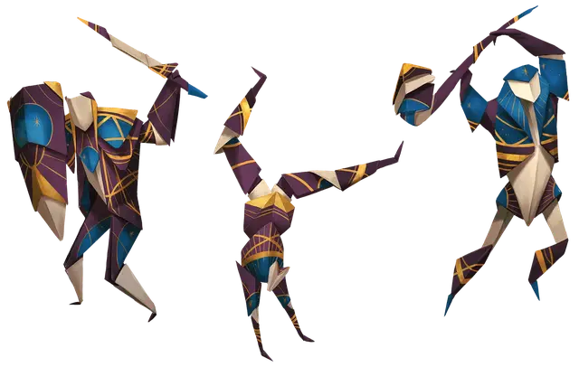

Защитник колоды
Deck Defender
Средний Конструкт, без мировоззрения

Класс Доспеха 16 (природный доспех)
Хиты 5 + ваш пятикратный уровень (защитник колоды имеет количество Костей Хитов к8, равное вашему уровню)
Скорость 30 футов
| мод | спас | ||
|---|---|---|---|
| СИЛ | 16 | +3 | +3 |
| ЛОВ | 16 | +3 | +3 |
| ТЕЛ | 14 | +2 | +2 |
| мод | спас | ||
|---|---|---|---|
| ИНТ | 3 | −4 | −4 |
| МДР | 10 | +0 | +0 |
| ХАР | 1 | −5 | −5 |
Иммунитет к урону яд
Иммунитет к состояниям глухота, испуг, истощение, окаменение, ослепление, отравление, очарование, паралич
Чувства слепое зрение 60 футов (слеп за его пределами), пассивное Восприятие 10
Языки понимает один из ваших языков, но не говорит
Опасность —
Особенности
Союзный рыцарь. В некоторых местах блок статистики защитника колоды основаны на персонаже, который вытащил карту Рыцаря. Там, где блок статистики защитника колоды отсылается к “вам”, он отсылается к этому персонажу.
Сложенная универсальность. После окончания продолжительного отдыха вы можете изменить форму защитника колоды, изменив её на форму Акробата, Берсерка или Стража.
Хрупкий. Если хиты защитника колоды уменьшается до 0, он превращается в беспорядочную стопку немагических игральных карт и не может быть воскрешен или восстановлен.
Действия
Мультиатака. Защитник колоды совершает количество атак, равное половине бонуса мастерства (с округлением в меньшую сторону).
Бумажный разрез. . Рукопашная атака оружием: БМ + 3 к попаданию, досягаемость 5 футов, одна цель. Попадание: 7 (1к8 + 3) рубящего урона.
Безрассудный удар (только в форме берсерка). Рукопашная атака оружием: БМ + 3 к попаданию (с преимуществом), досягаемость 5 футов, одна цель. Попадание: 10 (2к6 + 3) рубящего урона, и атаки, совершаемые против защитника колоды до начала его следующего хода, совершаются с преимуществом.
Бонусные действия
Стремительный шаг (только в форме акробата). Защитник колоды совершает Рывок или Отход.
Реакции
Защита (только форма стража). Защитник колоды создаёт помеху атаке одного существа, которое он может видеть в пределах 5 футов, при условии, что эта атака совершается не по защитнику колоды.
Описание
Защитники колоды - это Конструкты, сделанные из больших, замысловато сложенных игральных карт. Вы можете использовать защитника колоды, когда персонаж вытягивает карту Рыцаря, заменяя защитником дружественного союзника, которого обычно призывает карта.
Созданный на основе многогранной магии колоды многих вещей [deck of many things], защитник колоды подчиняется командам персонажа, который вытащил карту Рыцаря. Он может принимать множество форм. При вызове защитник колоды сначала появляется в своей защитной форме стража, со сложенными мечом и щитом. Персонаж, вызвавший защитника колоды, может по желанию превратить его в более угрожающую форму берсерка или проворного акробата.
Независимо от того, какую форму принимает защитник колоды, его карточная природа делает его хрупким. Когда защитник колоды побежден, он превращается в стопку немагических карт.